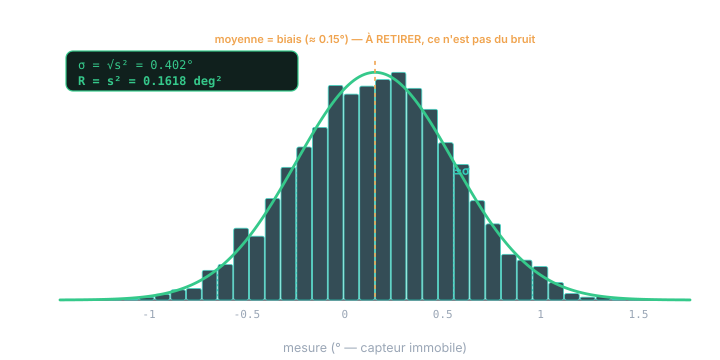
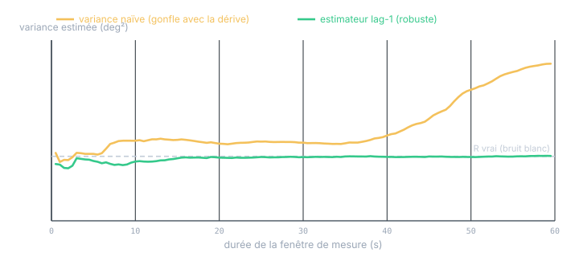
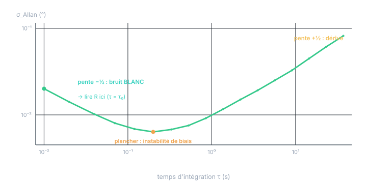

Chapitre 16 · Application
Estimer la variance d'un capteur (R) : datasheet & mesures
Objectifs du chapitre
- Rappeler ce qu'est R — et ce qu'il n'est pas (le biais, la justesse).
- Décoder une datasheet : densité spectrale, RMS, crête-à-crête, résolution → σ.
- Mesurer R au repos : variance empirique, nombre d'échantillons, calcul en ligne.
- Déjouer le bruit non-blanc (dérive) : variance d'Allan, estimateur à différences.
- Refermer la boucle avec la cohérence (NIS) et gérer le cas multi-capteur.
1. Ce que R est — et n'est pas
R est la variance du bruit de mesure : le bruit supposé blanc (sans mémoire) et centré (sans biais) du modèle z = H·x + v, v ∼ N(0, R) (chapitre 5). C'est une variance : ses unités sont des carrés (deg², m², (m/s²)²).
Le piège numéro un : confondre bruit et justesse. Une datasheet mélange deux choses très différentes. Le bruit (répétabilité, noise, RMS) est la dispersion aléatoire autour de la vraie valeur → il va dans R. La justesse (accuracy, offset, erreur de gain, non-linéarité, dérive en température) est une erreur systématique — un biais, pas du bruit. La mettre dans R gonfle artificiellement l'incertitude ; pire, un biais non traité fait dériver l'estimation quoi qu'on fasse. Un biais se calibre ou s'estime dans l'état (chapitre 10), il ne se noie pas dans R.
2. Depuis la datasheet : décoder le vocabulaire
Les fiches donnent rarement « la variance ». Elles donnent l'une des formes suivantes, qu'il faut traduire en σ (puis R = σ²).
| Spécification donnée | Comment obtenir σ |
|---|---|
| Densité spectrale de bruit (µg/√Hz, mdps/√Hz, nV/√Hz…) |
σ = densité × √(BW) BW = bande passante de bruit effective ≈ 1,57·f_c (filtre 1er ordre) ou l'ODR/filtre en sortie |
| Bruit RMS (à une BW précisée) | σ = RMS directement (le bruit est centré ⇒ RMS = σ) |
| Bruit crête-à-crête (pk-pk, ±X) | σ ≈ (pk-pk) / 6 (gaussien : ±3σ ≈ 99,7 %) |
| Résolution / LSB q | bruit de quantification σ_q = q/√12 (plancher, à combiner) |
D'où vient √BW ? Une densité spectrale d (en unité/√Hz) est une racine de densité de puissance. La puissance (variance) est l'intégrale de la densité de puissance d² sur la bande : σ² = ∫ d² df = d²·BW, d'où σ = d·√BW. Le 1,57 = π/2 est la bande de bruit équivalente d'un filtre 1er ordre de coupure f_c (elle laisse passer un peu plus que f_c).
Exemple — accéléromètre. Densité 150 µg/√Hz, filtre de sortie à f_c = 50 Hz :
σ ≈ 1,33 mg ≈ 0,013 m/s² → R = σ² ≈ 1,7·10⁻⁴ (m/s²)²
Exemple — inclinomètre. Fiche : « bruit RMS 0,008° à 10 Hz », résolution 0,001°. Bruit analogique σ = 0,008° ; quantification σ_q = 0,001/√12 ≈ 0,0003° (négligeable). R ≈ (0,008)² = 6,4·10⁻⁵ deg².
La datasheet donne le bruit à une bande passante précise. Si vous filtrez davantage (sortie plus lente), R diminue (moins de bande = moins de bruit) — mais vous ajoutez du retard (chapitre 11). Réduire R par filtrage n'est pas gratuit : c'est un compromis bruit ↔ latence, pas une amélioration pure.
3. Depuis des mesures : la méthode de référence
La datasheet donne un ordre de grandeur ; votre montage a son propre bruit (câblage, CAN, environnement). La mesure directe est la référence. Le protocole : capteur immobile (ou mesurant une grandeur constante connue), on enregistre N échantillons, et :
variance (Bessel) : s² = (1/(N−1)) Σ (zᵢ − μ̂)² → R = s²
Le diviseur N−1 (correction de Bessel) rend l'estimateur non biaisé — on a « dépensé » un degré de liberté à estimer μ̂. La moyenne μ̂ n'est pas du bruit : c'est le biais du capteur, à retirer (§1).

Combien d'échantillons ? L'estimation elle-même a une incertitude. Pour un bruit gaussien, l'écart-type relatif de s² vaut √(2/(N−1)). Pour connaître R à ±10 % il faut N ≈ 200 ; à ±3 %, N ≈ 2000. Quelques milliers d'échantillons suffisent donc largement. L'intervalle de confiance exact vient du χ² : (N−1)s²/R ∼ χ²(N−1).
Sur automate, on n'accumule pas un tableau : on calcule moyenne et variance en un seul passage, de façon numériquement stable, par l'algorithme de Welford.
// SCL — variance en ligne (Welford), un échantillon à la fois.
// #n, #mean, #M2 en statique, initialisés à 0 ; z = échantillon courant.
#n := #n + 1.0;
#d1 := #z - #mean;
#mean := #mean + #d1 / #n; // moyenne courante (le biais)
#d2 := #z - #mean;
#M2 := #M2 + #d1 * #d2; // somme des carrés des écarts
IF #n > 1.0 THEN
#variance := #M2 / (#n - 1.0); // R = variance (Bessel)
END_IF;4. Le piège du bruit non-blanc
La variance empirique suppose un bruit blanc. Or un capteur réel dérive : biais lentement variable, instabilité de biais, bruit basse fréquence (1/f). Ces composantes sont corrélées dans le temps — elles violent l'hypothèse, et la variance naïve calculée sur une longue fenêtre les compte comme du bruit : elle gonfle avec la durée d'observation.

Deux parades. La plus simple : l'estimateur à différences successives (lag-1), robuste à la dérive lente :
La différence zᵢ₊₁ − zᵢ soustrait deux instants voisins : la dérive (quasi constante d'un pas à l'autre) disparaît, seul le bruit blanc subsiste. Le facteur 2 vient de Var[zᵢ₊₁ − zᵢ] = 2σ² pour un bruit blanc.
La plus complète : la variance d'Allan. On calcule l'écart-type des moyennes de blocs de durée croissante τ et on le trace en log-log. Chaque type de bruit y a sa signature de pente.

Retenez la lecture : le R à mettre dans le filtre est la part blanche (pente −½), lue au temps d'intégration le plus court. La part dérive (pente +½) n'est pas du bruit de mesure : c'est un biais lentement variable, que le filtre gère mieux en l'estimant dans l'état (chapitre 10) qu'en gonflant R.
5. R dépend des conditions
R n'est pas toujours une constante universelle. Il dépend de :
- La bande passante / le filtrage : plus on filtre, plus R baisse — mais plus le retard monte (chapitre 11). Mesurez R avec le filtrage réellement utilisé.
- Le point de fonctionnement : un capteur peut être plus bruité en bout d'échelle ; une caméra a un bruit de position qui croît avec la distance (le même bruit angulaire projette plus loin). R peut alors être fonction de l'état — recalculé à chaque mesure.
- L'environnement : température, vibrations, EMI. Une R mesurée au repos, au calme, sous-estime le bruit en marche. Mesurez en conditions représentatives.
6. Refermer la boucle : la cohérence valide R
Datasheet et mesure donnent un point de départ. Le juge final est le filtre lui-même, en fonctionnement, via le test de cohérence (chapitre 12) : si la NIS est systématiquement trop grande, l'incertitude annoncée est trop petite (R ou Q sous-estimés) ; trop petite, c'est l'inverse. Concrètement, en régime permanent, la variance empirique des innovations doit coïncider avec la S prédite par le filtre. On ajuste alors R (dans la fourchette plausible du capteur) et Q jusqu'à la cohérence.
7. Le cas multi-capteur : la matrice R
Pour une mesure vectorielle, R est une matrice. Deux cas :
- Bruits indépendants (capteurs distincts, chaînes séparées) → R diagonale : les variances sur la diagonale, zéro ailleurs. C'est le cas par défaut, et il autorise les mises à jour scalaires séquentielles (chapitre 13).
- Source d'erreur commune (même CAN, même horloge, même référence, pixels voisins d'une caméra) → termes hors-diagonale : le bruit est corrélé. On les mesure comme la covariance croisée empirique des deux voies au repos. Les ignorer rend le filtre trop confiant sur les combinaisons corrélées.
Exercices
Exercice 1 — De la densité à R
Un gyromètre annonce une densité de bruit de 0,008 °/s/√Hz et un filtre de sortie à f_c = 20 Hz. Donnez σ (en °/s) puis R.
Voir la solution
σ = 0,008 × √31,4 ≈ 0,008 × 5,60 ≈ 0,0448 °/s
R = σ² ≈ 2,0·10⁻³ (°/s)²
Si l'on abaisse le filtre à f_c = 5 Hz, σ est divisé par 2 (√4) et R par 4 — au prix d'un retard accru.
Exercice 2 — Pourquoi lag-1 et pas la variance globale ?
On enregistre un capteur au repos pendant 10 minutes ; il présente une lente dérive thermique. La variance globale donne 0,05 deg², l'estimateur lag-1 donne 0,009 deg². Laquelle mettre dans R, et que faire de l'autre ?
Voir la solution
On met R = 0,009 deg² (lag-1) : c'est la part blanche, seule légitime pour le bruit de mesure. La variance globale 0,05 est gonflée par la dérive thermique — un biais lentement variable. Le mettre dans R rendrait le filtre inutilement méfiant. La bonne réponse à la dérive : l'estimer dans l'état (augmenter d'un état de biais, chapitre 10) ou la compenser par calibration en température — pas la noyer dans R.
Récapitulatif
- R = σ² = variance du bruit blanc, centré. Ce n'est pas la justesse (biais, gain, dérive) : celle-ci se calibre ou s'estime, jamais dans R.
- Datasheet : densité × √BW (BW ≈ 1,57·f_c) ; RMS = σ ; pk-pk/6 = σ ; résolution q → q/√12. Puis R = σ².
- Mesure : capteur immobile, s² = Σ(zᵢ−μ̂)²/(N−1) ; μ̂ = biais (à retirer). Précision √(2/(N−1)) → quelques milliers d'échantillons. Welford en ligne.
- Bruit non-blanc : la variance naïve gonfle avec la fenêtre. lag-1 R̂ = Σ(zᵢ₊₁−zᵢ)²/(2(N−1)) annule la dérive ; la variance d'Allan sépare blanc (−½) / instabilité (plancher) / dérive (+½).
- R dépend du filtrage, du point de fonctionnement et de l'environnement — mesurer en conditions représentatives.
- La cohérence (NIS, chapitre 12) valide et affine R in situ.
- Multi-capteur : R diagonale si bruits indépendants ; termes croisés si source commune.